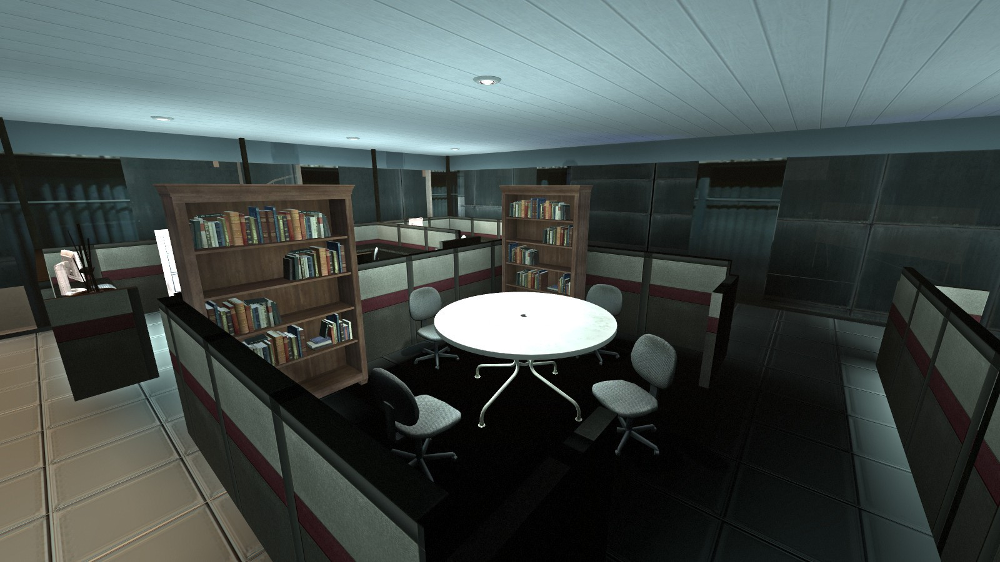

Atuar na criação de softwares que contribuam para o lazer, comunicação
e desempenho pessoal e profissional de seus clientes, através de soluções
que proporcionam produtividade, economia e aproveitamento do tempo livre.
Valores
Valorizando o tempo das pessoas: Por que tempo é dinheiro e com
aproveitamento gera resultados.
Excelência com simplicidade: Mostrando assim o nosso valor.
Ética e Responsabilidade: Com grandes poderes vem grandes responsabilidades.
Foco em resultados: Assim garantimos nossa qualidade
Sustentabilidade econômica, social e ambiental: É isso que nos dá a confiança
de seguir em frente.
Compromisso e Satisfação: Garantindo que com um bom trabalho podemos ir longe.